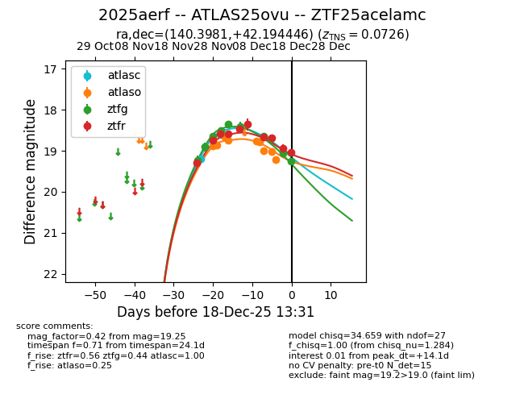
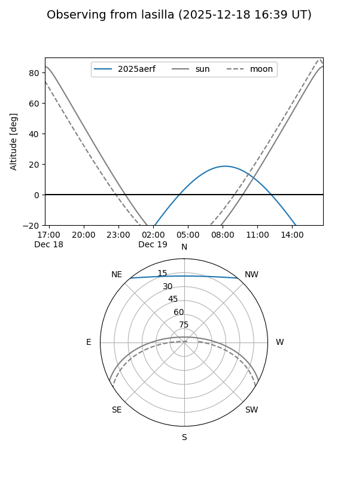
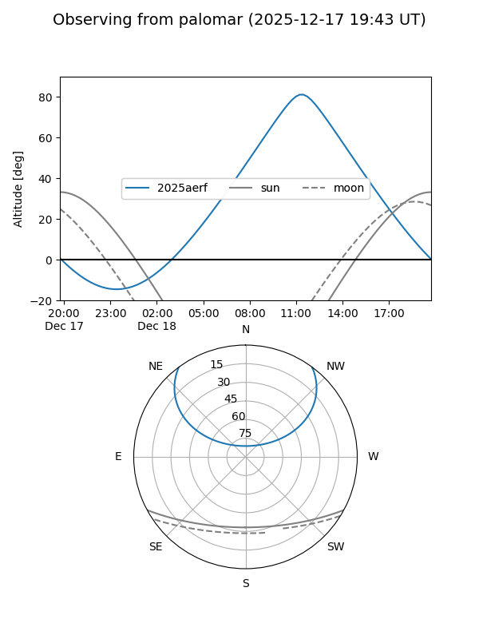
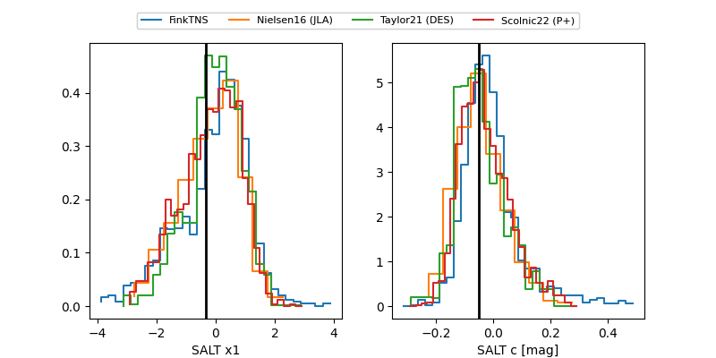

2025aerf
Target 2025aerf at 2025-12-18 13:32
Aliases and brokers:
FINK: fink-portal.org/ZTF25acelamc
Lasair: lasair-ztf.lsst.ac.uk/objects/ZTF25acelamc
ALeRCE: alerce.online/object/ZTF25acelamc
TNS: wis-tns.org/object/2025aerf
YSE: ziggy.ucolick.org/yse/transient_detail/2025aerf
alt names
ZTF25acelamc (ztf,fink_ztf)
2025aerf (tns,yse)
ATLAS25ovu (atlas)
Coordinates:
equatorial (ra, dec) = 140.3981,+42.19445
equatorial (HMS+DMS) = 09:21:35.55,+42:11:40.01
galactic (l, b) = (179.2230,+45.07323)
Photometry
last atlasc=18.61, atlaso=19.22, ztfg=19.25, ztfr=19.04
2 atlasc, 9 atlaso, 10 ztfg, 10 ztfr detections
Lightcurve

Visibility


Additional plots
